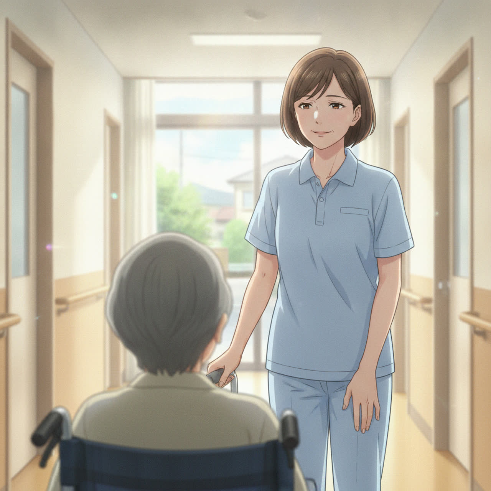
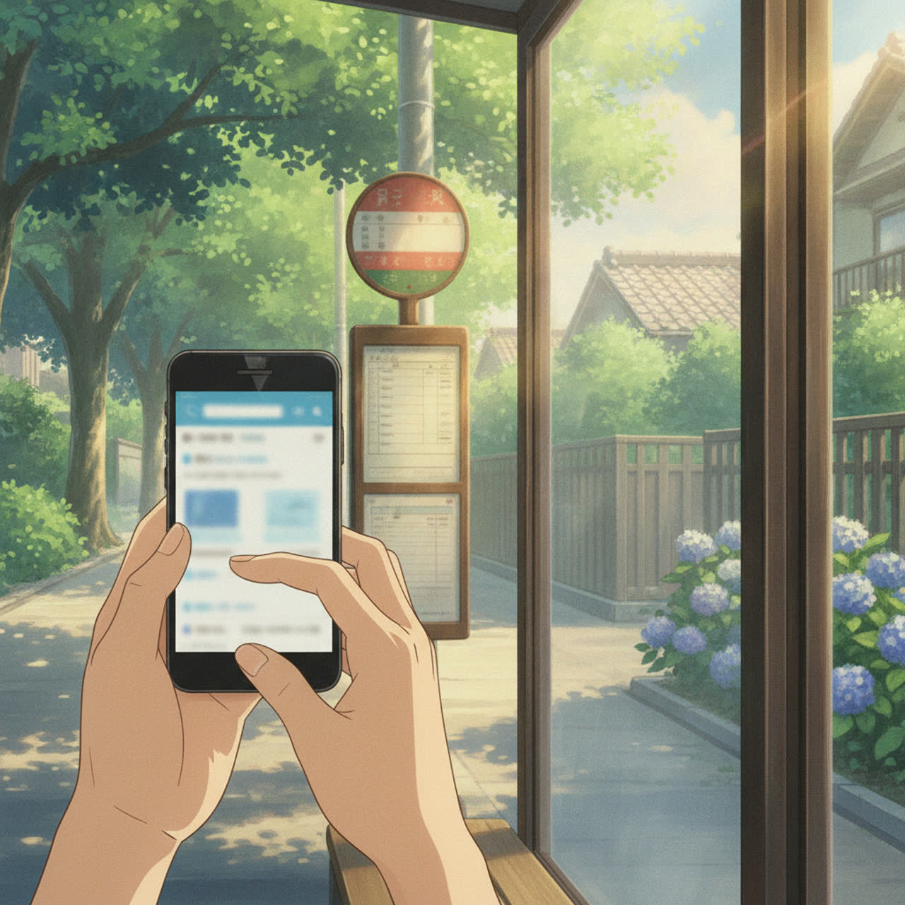
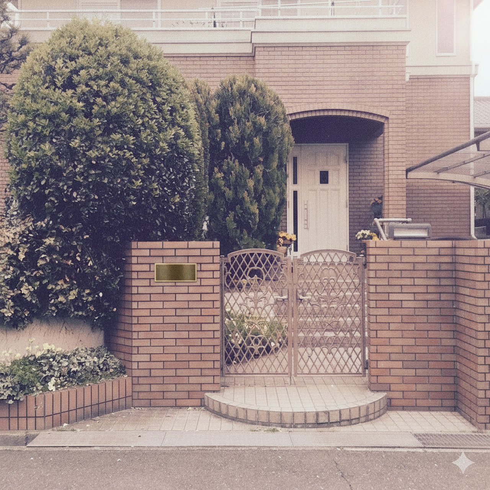
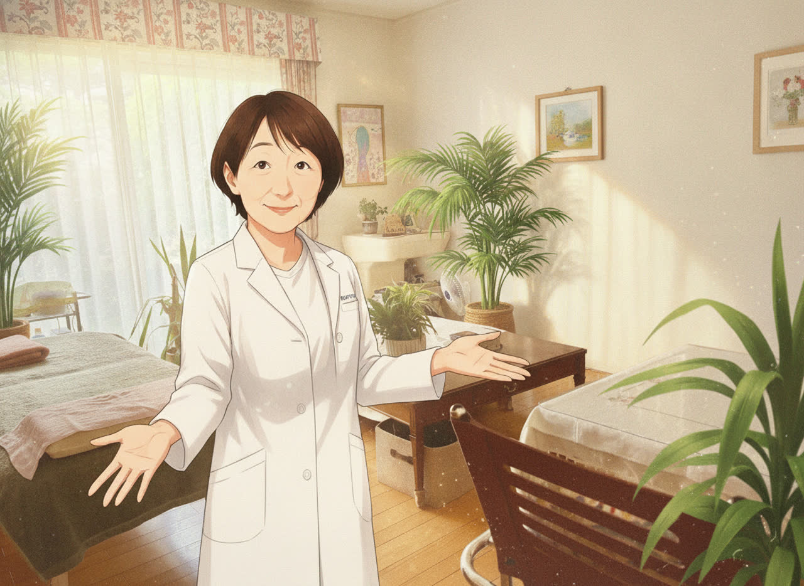
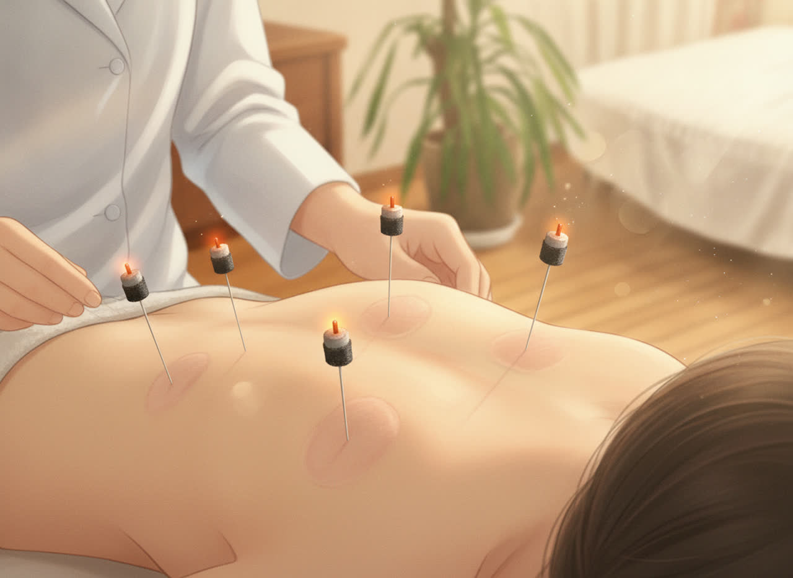
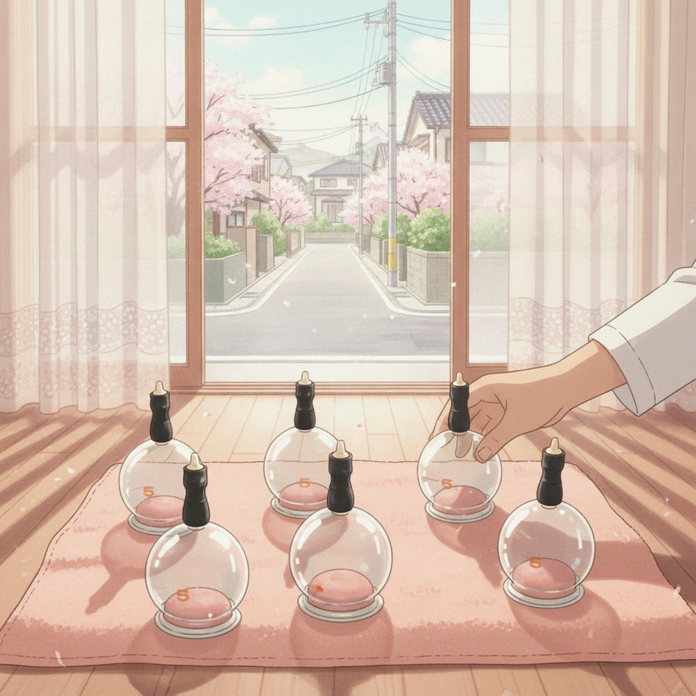
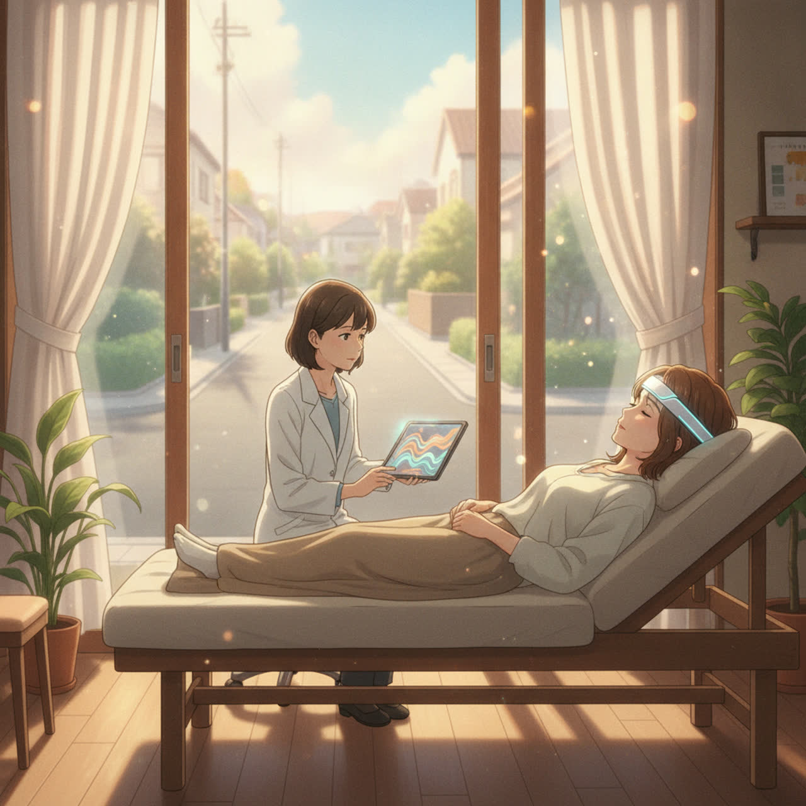
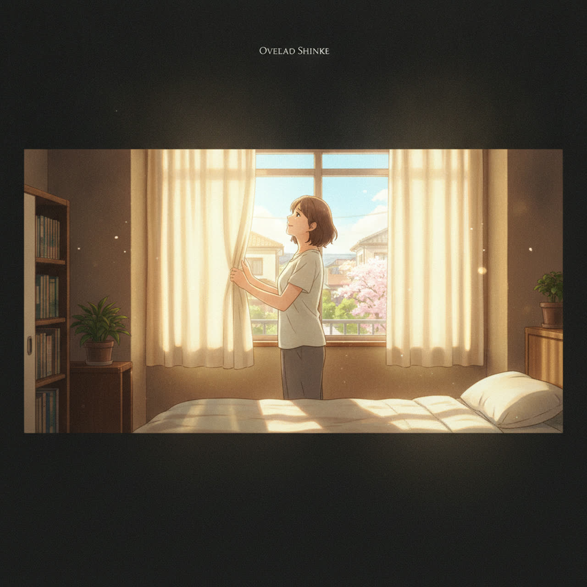
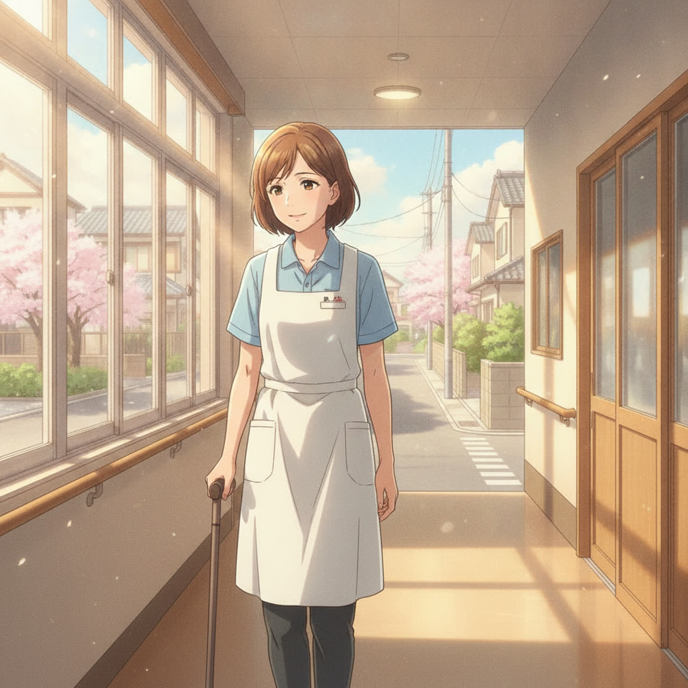
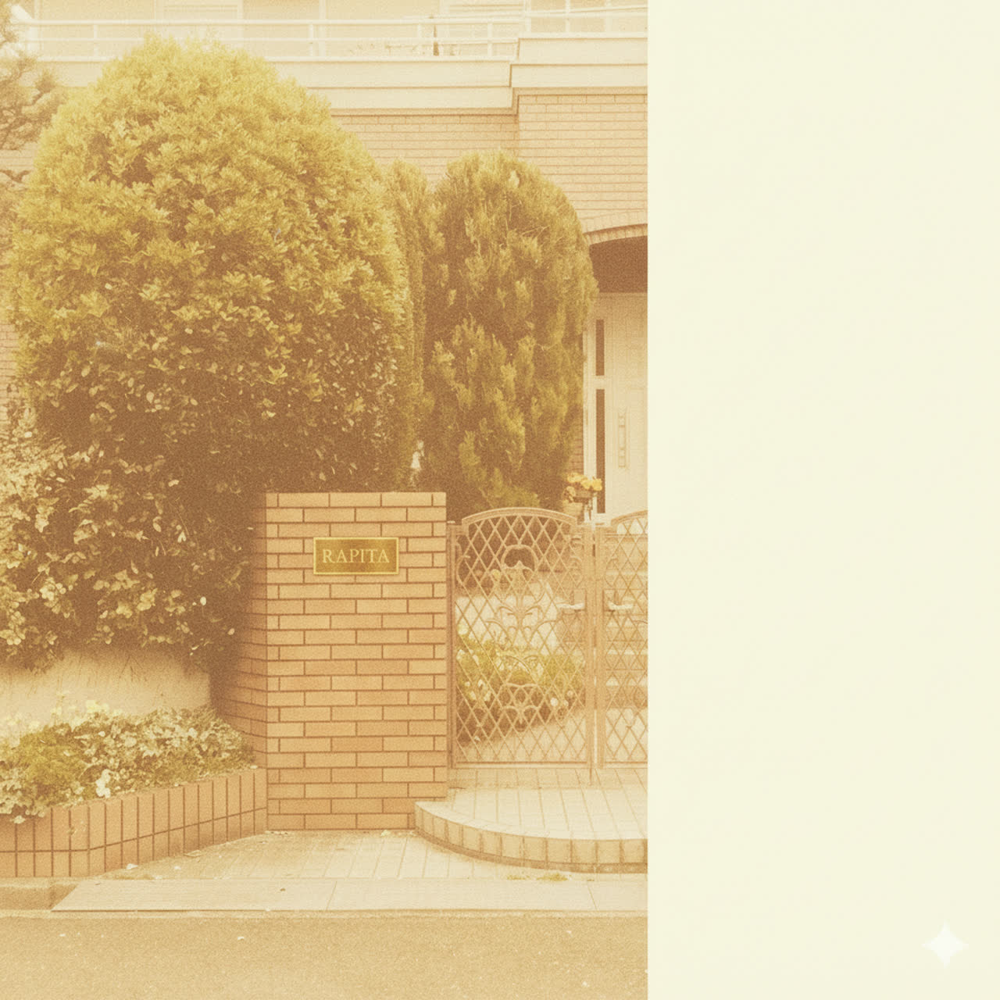

案件サマリ
モックアップ動画（無音版・テロップ焼き込み）
※ナレーション・BGMは仮置きのため、現バージョンは無音です。本仕上げで「落ち着いた女性ナレ＋癒し系BGM」を追加予定。
※テロップ・住所・TEL・QR遷移先URLは動画内に焼き込み済み。
クライアントご要望（2026-06-09 LINE）の反映状況
- 「隠れ家」表現は画・テロップ・ナレ台本のすべてで使用していません（「閑静な住宅街の中にある」で統一）
- 「奈良・学園前」のエリア表記をシーン3テロップ＋エンドカードで2回露出必須要望
- 公開時期を7月前半→8月予定に変更し制作スケジュール調整済み
構成案＋台本（PASONA構造）
前半（S1〜S3・寒色トーン）で「朝の腰／介護現場の膝・肩」の悩み共感→ S4以降（暖色トーン）でRAPITAの解決→ S9以降「翌朝が軽い／仕事もサクサク」のAfterを描く流れ。

S010〜3秒
朝の一歩目、腰が重い
朝の一歩目、腰が、重い。
寝室・ベッド脇。50代女性が腰に手を当てる。寒色トーンで「だるさ」の入口。

S023〜7秒
膝が痛い／肩がこる
立ち仕事の膝、ずっとこわばる肩。
介護施設の廊下。利用者の車椅子を支えながら膝に手。ターゲット直撃の悩みカット。

S037〜10秒
奈良・学園前で見つけた エリア露出①
がまんし続けて、いいわけない。
バス停でスマホ検索。「奈良・学園前」エリア表記をテロップで1回目の露出。

S0410〜14秒
鍼灸院 RAPITA
閑静な住宅街の中に、その治療室はあります。
いただいたRAPITA外観写真（レンガ塀・緑・表札）をアニメ調で再構成。明るく開かれた印象に。

S0514〜18秒
薬剤師 × 鍼灸師
迎えるのは、薬剤師の資格をもつ鍼灸師。
いただいた代表のアニメ風イラスト＋治療室写真を踏襲。白衣に「RAPITA」ロゴ。

S0618〜23秒
お一人 約60分／完全予約制
東洋医学と、波動医学。お一人にじっくり、1時間。
いただいた灸頭鍼の写真をベースに、屋内のあたたかな光で再描画。

S0723〜27秒
吸い玉（カッピング）
吸い玉で、深くにアプローチ。
いただいた吸い玉の写真の構図・色味を踏襲。先生の手のひらを添える。

S0827〜30秒
メタトロン（バイオレゾナンス）
気になる方には、メタトロンも。
サブ訴求。穏やかに目を閉じる主役＋やわらかな光のセンサー表現。

S0930〜35秒
朝が、軽い。
朝が、軽い。
翌朝の寝室・カーテンを開ける主役。S01の寒色 → 暖色への色味転換でBefore→Afterを強調。

S1035〜40秒
また、自分らしく動ける日々へ
仕事も、私も、サクサクと。
介護現場で笑顔。足取り軽やかに歩く未来像で締め。

S1140〜45秒
ENDCARD（屋号・連絡先・QR遷移先）エリア露出②
無音 or BGMフェード
鍼灸院 RAPITA／奈良・学園前 ／ 完全予約制／
〒 奈良県奈良市東登美ヶ丘1-11-10／TEL 090-3867-1325／▶ lit.link/RAPITA
※QRコードは本仕上げ時に右側パネル内に追加予定。
〒 奈良県奈良市東登美ヶ丘1-11-10／TEL 090-3867-1325／▶ lit.link/RAPITA
※QRコードは本仕上げ時に右側パネル内に追加予定。
仮置き項目（モック提示時にご確認いただきたい点）
- BGM：落ち着いた癒し系（和×現代の優しいピアノ＋ストリングス）で仮置き
- ナレーション：女性ナレ（落ち着いたトーン・ゆったり）で仮置き／声質サンプルは別途共有可
- 尺：45秒で仮置き／30秒や60秒もご希望あれば調整可
- 代表（先生）の動画内出演：受領イラスト準拠の「顔出しOK・アニメ調」で仮置き／「手元のみ／出演なし」もご希望あれば調整可
素材ご準備のお願い（任意・仕上げ用の差し替え）
今回はHP・受領写真5点とAIで全カット作成しているため素材なしでもこのまま納品可能です。より実物に寄せたい場合のみ下記をいただければ該当カットを差し替えます。
- ・治療室の追加カット（別アングル）
- ・施術中の手元アップ（鍼／吸い玉）
- ・代表ご本人のお写真（顔出しを実写ベースに寄せたい場合）